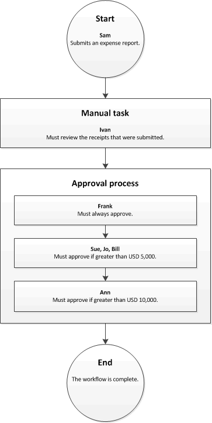

Genehmigungsschritte in einem Workflow konfigurieren
Important
Dynamics 365 for Finance and Operations hat sich zu speziell entwickelten Anwendungen entwickelt, mit denen Sie bestimmte Geschäftsfunktionen verwalten können. Weitere Informationen zu diesen Änderungen finden Sie im Dynamics 365-Lizenzierungshandbuch.
Dieses Thema erläutert, wie Sie die Eigenschaften eines Genehmigungsschritts konfigurieren können.
Klicken Sie zum Konfigurieren eines Genehmigungsschritts im Workflow-Editor mit der rechten Maustaste auf den Genehmigungsschritt, und klicken Sie dann auf Eigenschaften, um die Seite Eigenschaften zu öffnen. Verwenden Sie dann die folgenden Verfahren, um die Eigenschaften des Genehmigungsschritts zu konfigurieren.
Benennen des Schritts
Gehen Sie folgendermaßen vor, um einen Namen für den Genehmigungsschritt einzugeben.
- Klicken Sie im linken Bereich auf Grundeinstellungen.
- Geben Sie im Feld Name einen eindeutigen Namen für den Genehmigungsschritt ein.
Eingeben einer Betreffzeile und von Anweisungen
Sie müssen eine Betreffzeile und Anweisungen für Benutzer eingeben, die dem Genehmigungsschritt zugewiesen sind. Wenn Sie z. B. einen Genehmigungsschritt für Bestellanforderungen konfigurieren, werden dem Benutzer, der dem Schritt zugewiesen ist, die Betreffzeile und Anweisungen auf der Seite Bestellanforderungen angezeigt. Die Betreffzeile wird in einer Statusleiste auf der Seite angezeigt. Der Benutzer kann nun auf das Symbol in der Statusleiste klicken, um die Anweisungen anzuzeigen. Gehen Sie folgendermaßen vor, um eine Betreffzeile und Anweisungen einzugeben.
Klicken Sie im linken Bereich auf Grundeinstellungen.
Geben Sie im Feld Betreff für die Arbeitsaufgabe die Betreffzeile ein.
Zum Personalisieren der Betreffzeile können Sie Platzhalter einfügen. Platzhalter werden durch die entsprechenden Daten ersetzt, wenn die Betreffzeile Benutzern angezeigt wird. Führen Sie folgende Schritte aus, um einen Platzhalter einzufügen:
- Klicken Sie im Textfeld die Position des Platzhalters an.
- Klicken Sie auf Platzhalter einfügen.
- Wählen Sie in der angezeigten Liste den einzufügenden Platzhalter aus.
- Klicken Sie auf Einfügen.
Führen Sie die folgenden Schritte aus, um Übersetzungen der Betreffzeile hinzuzufügen:
- Klicken Sie auf Übersetzungen.
- Klicken Sie auf der nun angezeigten Seite auf Hinzufügen.
- Wählen Sie in der angezeigten Liste die Sprache aus, in der Sie den Text eingeben.
- Geben Sie den Text im Feld Übersetzter Text ein.
- Um den Text zu personalisieren, können Platzhalter, wie in Schritt 3 beschrieben, eingefügt werden.
- Klicken Sie auf Schließen.
Geben Sie im Feld Arbeitsaufgabenanweisungen die Arbeitsanweisungen ein.
Zum Personalisieren der Anweisungen können Sie Platzhalter einfügen. Platzhalter werden beim Anzeigen der Arbeitsanweisungen durch die entsprechenden Daten ersetzt. Führen Sie folgende Schritte aus, um einen Platzhalter einzufügen:
- Klicken Sie im Textfeld die Position des Platzhalters an.
- Klicken Sie auf Platzhalter einfügen.
- Wählen Sie in der angezeigten Liste den einzufügenden Platzhalter aus.
- Klicken Sie auf Einfügen.
Führen Sie die folgenden Schritte aus, um Übersetzungen von Arbeitsanweisungen hinzuzufügen:
- Klicken Sie auf Übersetzungen.
- Klicken Sie auf der nun angezeigten Seite auf Hinzufügen.
- Wählen Sie in der angezeigten Liste die Sprache aus, in der Sie den Text eingeben.
- Geben Sie den Text im Feld Übersetzter Text ein.
- Um den Text zu personalisieren, können Platzhalter, wie in Schritt 6 beschrieben, eingefügt werden.
- Klicken Sie auf Schließen.
Zuweisen des Genehmigungsschritts
Gehen Sie folgendermaßen vor, um anzugeben, wem der Genehmigungsschritt zugewiesen werden soll.
Klicken Sie im linken Bereich auf Zuweisung.
Wählen Sie auf der Registerkarte Zuweisungstyp eine der Optionen der folgenden Tabelle aus, und führen Sie dann die zusätzlichen Schritte für die Option aus, bevor Sie mit Schritt 3 fortfahren.
Mit der folgenden Option... Benutzer, denen der Genehmigungsschritt zugewiesen ist Zusätzliche Schritte Teilnehmer Benutzer, die einer bestimmten Gruppe oder Rolle zugewiesen sind - Nachdem Sie Teilnehmer auf der Registerkarte Rollenbasiert in der Liste Art von Teilnehmer ausgewählt haben, wählen Sie den Typ der Gruppe oder der Rolle aus, dem der Schritt zugewiesen werden soll.
- Wählen Sie in der Liste Teilnehmer den Typ der Gruppe oder der Rolle aus, dem der Schritt zugewiesen werden soll.
Hierarchie Benutzer in einer bestimmten Organisationshierarchie - Nachdem Sie Hierarchie auf der Registerkarte Hierarchieauswahl in der Liste Hierarchietyp ausgewählt haben, wählen Sie den Typ der Hierarchie aus, dem der Schritt zugewiesen werden soll.
- Vom System muss eine Reihe von Benutzernamen aus der Hierarchie abgerufen werden. Diese Namen stellen Benutzer dar, denen der Schritt zugewiesen werden kann. Gehen Sie folgendermaßen vor, um den Anfangs- und Endpunkt des Bereichs von Benutzernamen anzugeben, die vom System abgerufen werden:
- Wählen Sie zum Angeben eines Startpunkts eine Person in der Liste Beginn aus.
- Klicken Sie zum Angeben des Endpunkts auf Bedingung hinzufügen. Geben Sie dann eine Bedingung ein, die bestimmt, an welcher Position in der Hierarchie das Abrufen von Namen beendet werden soll.
- Geben Sie auf der Registerkarte Hierarchieoptionen an, welchen Benutzern im Bereich der Schritt zugewiesen werden soll:
- Allen abgerufenen Benutzern zuordnen – Der Schritt wird allen Benutzern im Bereich zugeordnet.
- Nur letztem abgerufenen Benutzer zuordnen – Der Schritt wird nur dem letzten Benutzer im Bereich zugewiesen.
- Benutzer ausschließen, die die folgenden Bedingung erfüllen – Der Schritt wird keinem Benutzer im Bereich zugewiesen, der eine bestimmte Bedingung erfüllt. Klicken Sie auf Bedingung hinzufügen, um die Bedingung anzugeben.
Workflowbenutzer Benutzer im aktuellen Workflow - Nachdem Sie, Workflowbenutzer auf der Registerkarte Workflowbenutzer, in der Liste Workflowbenutzer ausgewählt haben, wählen Sie einen Benutzer aus, der am Workflow teilnimmt.
Benutzer Bestimmte Benutzer - Nachdem Sie Benutzerausegwählt haben, klicken Sie auf die Registerkarte Benutzer.
- Die Liste Verfügbare Benutzer enthält alle Systembenutzer. Wählen Sie die Benutzer aus, um den Schritt zuzuweisen, und verschieben Sie diese Benutzer dann in die Liste Ausgewählte Benutzer.
Geben Sie auf der Registerkarte Zeitlimit im Feld Dauer an, wie viel Zeit dem Benutzer zum Bearbeiten oder Beantworten von Dokumenten zur Verfügung steht, die den Genehmigungsschritt erreichen. Folgende Optionen stehen zur Auswahl:
- Stunden – Geben Sie die Anzahl der Stunden ein, die der Benutzer zum Beantworten hat. Wählen Sie dann den Kalender aus, den Ihre Organisation verwendet, und geben Sie Informationen zur Arbeitswoche der Organisation ein.
- Tage – Geben Sie die Anzahl der Tage ein, die der Benutzer zum Beantworten hat. Wählen Sie dann den Kalender aus, den Ihre Organisation verwendet, und geben Sie Informationen zur Arbeitswoche der Organisation ein.
- Wochen – Geben Sie die Anzahl der Wochen ein, die der Benutzer zum Beantworten hat.
- Monate – Wählen Sie den Tag und die Woche aus, bis zu dem der Benutzer antworten muss. Sie können z. B. angeben, dass der Benutzer bis Freitag der dritten Woche des Monats antworten soll.
- Jahre – Wählen Sie den Tag, die Woche und den Monat aus, bis zu dem der Benutzer antworten muss. Sie können z. B. angeben, dass der Benutzer bis Freitag der dritten Woche im Dezember antworten soll.
Wenn der Benutzer das Dokument nicht innerhalb der vorgesehenen Zeit bearbeitet, ist das Dokument überfällig. Ein überfälliges Dokument wird basierend auf den ausgewählten Optionen im Bereich Eskalation der Seite eskaliert.
Wenn Sie den Genehmigungsschritt mehreren Benutzern oder einer Gruppe von Benutzern zugewiesen haben, klicken Sie auf die Registerkarte Vollendungsrichtlinie, und wählen Sie eine der folgenden Optionen aus:
Einzelne genehmigende Person – Die Aktivität für das Dokument wird von der ersten antwortenden Person bestimmt. Nehmen wir an, Steffen hat eine Spesenabrechnung in Höhe von 15.000 Euro eingereicht. Die Spesenabrechnung ist derzeit Saskia, Jens und Bastian zugewiesen. Falls Saskia die erste Person ist, die das Dokument beantwortet, wird ihre Aktivität für das Dokument übernommen. Falls Saskia das Dokument ablehnt, wird es abgelehnt und an Steffen zurückgesendet. Wenn Saskia das Dokument genehmigt, wird es zur Genehmigung an Anne gesendet.

Mehrheit der genehmigenden Personen – Die Aktivität für das Dokument wird bei Antwort der Mehrheit der genehmigenden Personen bestimmt. Nehmen wir an, Steffen hat eine Spesenabrechnung in Höhe von 15.000 Euro eingereicht. Die Spesenabrechnung ist derzeit Saskia, Jens und Bastian zugewiesen. Falls Saskia und Jens die ersten beiden genehmigenden Personen sind, die antworten, wird ihre Aktivität für das Dokument übernommen.
- Wird das Dokument von Saskia genehmigt, von Jens jedoch abgelehnt, wird es abgelehnt und an Steffen zurückgesendet.
- Wird das Dokument sowohl von Saskia als auch von Jens genehmigt, wird es zur Genehmigung an Anne gesendet.
Prozentsatz der Genehmiger – Die Aktivität für das Dokument wird bei Antwort eines bestimmten Prozentsatzes der genehmigenden Personen bestimmt. Nehmen wir an, Steffen hat eine Spesenabrechnung in Höhe von 15.000 Euro eingereicht. Die Spesenabrechnung ist derzeit Saskia, Jens und Bastian zugewiesen, und Sie haben 50 als Prozentsatz eingegeben. Falls Saskia und Jens die ersten beiden genehmigenden Personen sind, die antworten, wird ihre Aktivität für das Dokument übernommen, da sie die Anforderung von 50 Prozent der genehmigenden Personen erfüllen.
- Wird das Dokument von Saskia genehmigt, von Jens jedoch abgelehnt, wird es abgelehnt und an Steffen zurückgesendet.
- Wird das Dokument sowohl von Saskia als auch von Jens genehmigt, wird es zur Genehmigung an Anne gesendet.
Alle genehmigenden Personen – Alle genehmigenden Personen müssen das Dokument genehmigen. Andernfalls kann der Workflow nicht fortgesetzt werden. Nehmen wir an, Steffen hat eine Spesenabrechnung in Höhe von 15.000 Euro eingereicht. Die Spesenabrechnung ist derzeit Saskia, Jens und Bastian zugewiesen. Wird das Dokument von Saskia und Jens genehmigt, von Bastian jedoch abgelehnt, wird es abgelehnt und an Steffen zurückgesendet. Wird das Dokument von Saskia, Jens und Bastian genehmigt, wird es zur Genehmigung an Anne gesendet.
Angeben, wann der Genehmigungsschritt erforderlich ist
Sie können angeben, wann der Genehmigungsschritt erforderlich ist. Der Genehmigungsschritt kann immer oder nur dann erforderlich sein, wenn bestimmte Bedingungen erfüllt sind.
Der Genehmigungsschritt ist immer erforderlich
Gehen Sie folgendermaßen vor, wenn der Genehmigungsschritt immer erforderlich ist.
- Klicken Sie im linken Bereich auf Bedingung.
- Wählen Sie die Option Diesen Schritt immer ausführen aus.
Der Genehmigungsschritt ist unter bestimmten Bedingungen erforderlich
Der Genehmigungsschritt, den Sie konfigurieren, ist möglicherweise nur erforderlich, wenn bestimmte Bedingungen erfüllt sind. Beispiel: Sie konfigurieren einen Genehmigungsschritt für einen Workflow für Bestellanforderungen und möchten, dass der Genehmigungsschritt nur dann ausgeführt wird, wenn die Bestellanforderung einen Betrag von 10.000 Euro überschreitet. Gehen Sie folgendermaßen vor, um anzugeben, wann der Genehmigungsschritt erforderlich ist.
Klicken Sie im linken Bereich auf Bedingung.
Wählen Sie die Option Diesen Schritt nur ausführen, wenn folgende Bedingungen erfüllt sind aus.
Geben Sie eine Bedingung ein.
Geben Sie alle notwendigen zusätzlichen Bedingungen ein.
Führen Sie folgende Schritte aus, um die korrekte Konfiguration der eingegebenen Bedingungen zu überprüfen:
- Klicken Sie auf Test.
- Auf der Seite Workflowbedingung testen im Bereich Bedingung überprüfen wählen Sie einen Datensatz aus.
- Klicken Sie auf Test. Der Datensatz wird ausgewertet, um zu bestimmen, ob er den festgelegten Bedingungen entspricht.
- Klicken Sie auf OK oder Abbrechen, um zur Seite Eigenschaften zurückzukehren.
Festlegen der Vorgehensweise für überfällige Dokumente
Wenn ein Benutzer ein Dokument nicht innerhalb der vorgesehenen Zeit bearbeitet, ist das Dokument überfällig. Ein überfälliges Dokument kann eskaliert oder automatisch einem anderen Benutzer zur Genehmigung zugewiesen werden. Führen Sie die folgenden Schritte aus, um das Dokument zu eskalieren, wenn es überfällig ist.
Klicken Sie im linken Bereich auf Eskalation.
Aktivieren Sie das Kontrollkästchen Eskalationspfad verwenden, um einen Eskalationspfad zu erstellen. Das Dokument wird automatisch den im Eskalationspfad aufgeführten Benutzern zugewiesen. Die folgende Tabelle stellt z. B. einen Eskalationspfad dar.
Sequenz Eskalationspfad 1 Zuweisen zu: Doris 2 Zuweisen zu: Elke 3 Abschließende Aktivität: Ablehnen In diesem Beispiel wird das überfällige Dokument Doris zugewiesen. Antwortet Doris nicht innerhalb der vorgesehenen Zeit, wird das Dokument Elke zugewiesen. Antwortet Elke nicht innerhalb der vorgesehenen Zeit, wird das Dokument abgelehnt.
Klicken Sie auf Eskalation hinzufügen, um dem Eskalationspfad einen Benutzer hinzuzufügen. Wählen Sie auf der Registerkarte Zuweisungstyp eine der Optionen der folgenden Tabelle aus, und führen Sie dann die zusätzlichen Schritte für die Option aus, bevor Sie mit Schritt 4 fortfahren.
Mit der folgenden Option... Benutzer, denen das Dokument eskaliert wird Zusätzliche Schritte Hierarchie Benutzer in einer bestimmten Organisationshierarchie - Nachdem Sie Hierarchie auf der Registerkarte Hierarchieauswahl in der Liste Hierarchietyp ausgewählt haben, wählen Sie den Typ der Hierarchie aus, an den das Dokument eskaliert werden soll.
- Vom System muss eine Reihe von Benutzernamen aus der Hierarchie abgerufen werden. Diese Namen stellen Benutzer dar, an die das Dokument unter Umständen eskaliert werden kann. Gehen Sie folgendermaßen vor, um den Anfangs- und Endpunkt des Bereichs von Benutzernamen anzugeben, die vom System abgerufen werden:
- Wählen Sie zum Angeben eines Startpunkts eine Person in der Liste Beginn aus.
- Klicken Sie zum Angeben des Endpunkts auf Bedingung hinzufügen. Geben Sie dann eine Bedingung ein, die bestimmt, an welcher Position in der Hierarchie das Abrufen von Namen beendet werden soll.
- Geben Sie auf der Registerkarte Hierarchieoptionen an, an welche Benutzer im Bereich das Dokument eskaliert werden soll:
- Allen abgerufenen Benutzern zuordnen – Das Dokument wird an alle Benutzer im Bereich eskaliert.
- Nur letztem abgerufenen Benutzer zuordnen – Das Dokument wird nur an den letzten Benutzer im Bereich eskaliert.
- Benutzer ausschließen, die die folgenden Bedingung erfüllen – Das Dokument wird an keinen Benutzer im Bereich eskaliert, der eine bestimmte Bedingung erfüllt. Klicken Sie auf Bedingung hinzufügen, um die Bedingung anzugeben.
Workflowbenutzer Benutzer im aktuellen Workflow - Nachdem Sie, Workflowbenutzer auf der Registerkarte Workflowbenutzer, in der Liste Workflowbenutzer ausgewählt haben, wählen Sie einen Benutzer aus, der am Workflow teilnimmt.
Benutzer Bestimmte Benutzer - Nachdem Sie Benutzerausegwählt haben, klicken Sie auf die Registerkarte Benutzer.
- Die Liste Verfügbare Benutzer enthält alle Benutzer. Wählen Sie die Benutzer aus, an die das Dokument eskaliert werden soll, und verschieben Sie diese Benutzer in die Liste Ausgewählte Benutzer.
Geben Sie auf der Registerkarte Zeitlimit im Feld Dauer an, wie viel Zeit dem Benutzer zum Bearbeiten oder Beantworten von Dokumenten zur Verfügung steht. Folgende Optionen stehen zur Auswahl:
- Stunden – Geben Sie die Anzahl der Stunden ein, die der Benutzer zum Beantworten hat. Wählen Sie dann den Kalender aus, den Ihre Organisation verwendet, und geben Sie Informationen zur Arbeitswoche der Organisation ein.
- Tage – Geben Sie die Anzahl der Tage ein, die der Benutzer zum Beantworten hat. Wählen Sie dann den Kalender aus, den Ihre Organisation verwendet, und geben Sie Informationen zur Arbeitswoche der Organisation ein.
- Wochen – Geben Sie die Anzahl der Wochen ein, die der Benutzer zum Beantworten hat.
- Monate – Wählen Sie den Tag und die Woche aus, bis zu dem der Benutzer antworten muss. Sie können z. B. angeben, dass der Benutzer bis Freitag der dritten Woche des Monats antworten soll.
- Jahre – Wählen Sie den Tag, die Woche und den Monat aus, bis zu dem der Benutzer antworten muss. Sie können z. B. angeben, dass der Benutzer bis Freitag der dritten Woche im Dezember antworten soll.
Wiederholen Sie die Schritte 3 bis 4 für alle Benutzer, die dem Eskalationspfad hinzugefügt werden sollen. Sie können die Reihenfolge der Benutzer ändern.
Wenn die Benutzer im Eskalationspfad nicht innerhalb der vorgesehenen Zeit antworten, wird das Dokument automatisch bearbeitet. Um die vom System auszuführende Aktivität anzugeben, wählen Sie die Zeile Aktivität aus, klicken Sie dann auf die Registerkarte Aktivität bei Beendigung und wählen eine Aktivität aus.